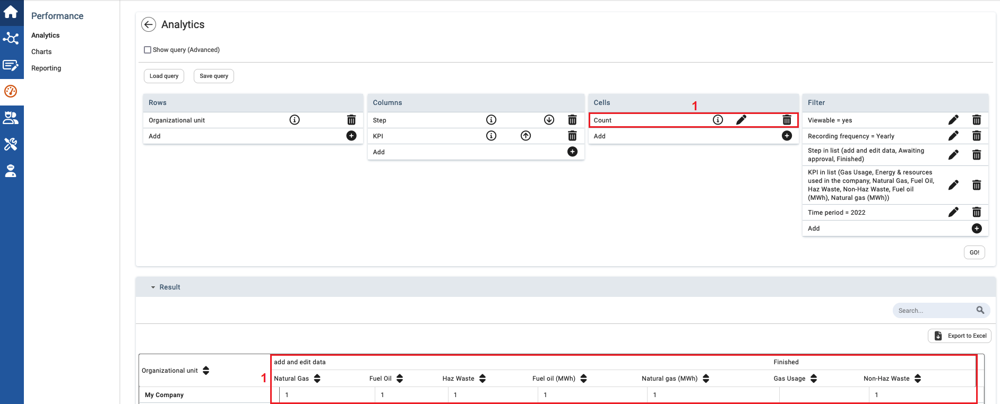
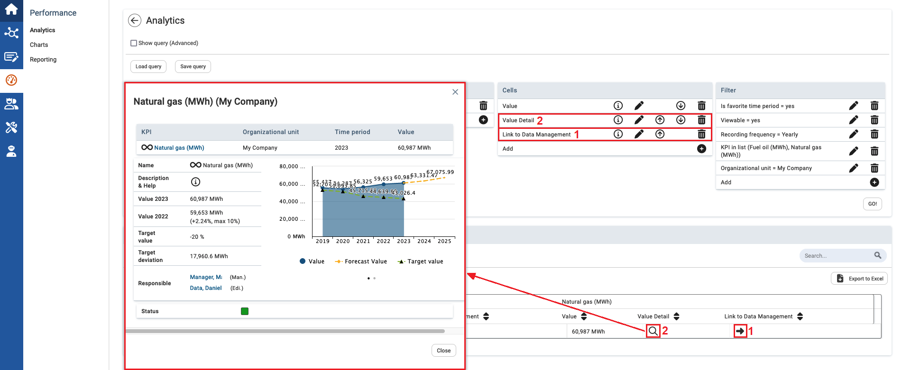

You can also add variables with special features to cells.

| 1 | Select the variable Count to count all values that apply to the appropriate column and row as well as to the selected filters. For example, this feature can be used to query the number of indicators in certain approval steps. |

| 1 | Add the Link to Data Management variable to review the corresponding values in the Data Management module. The icon for this feature is an arrow (). If the user has no rights to review the value in Data Management, they are directed to a Data Management page that is close to the value for which they have rights. |
| 2 | If you prefer to review the corresponding value directly on Analytics, add the Value Detail cell. Now the |